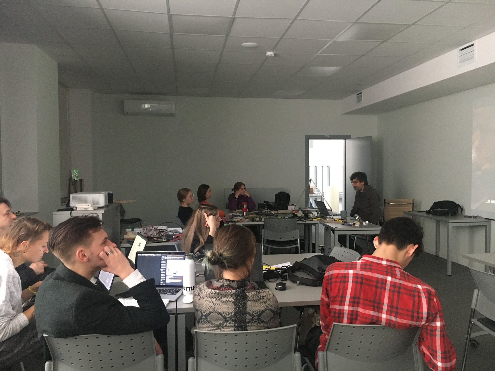
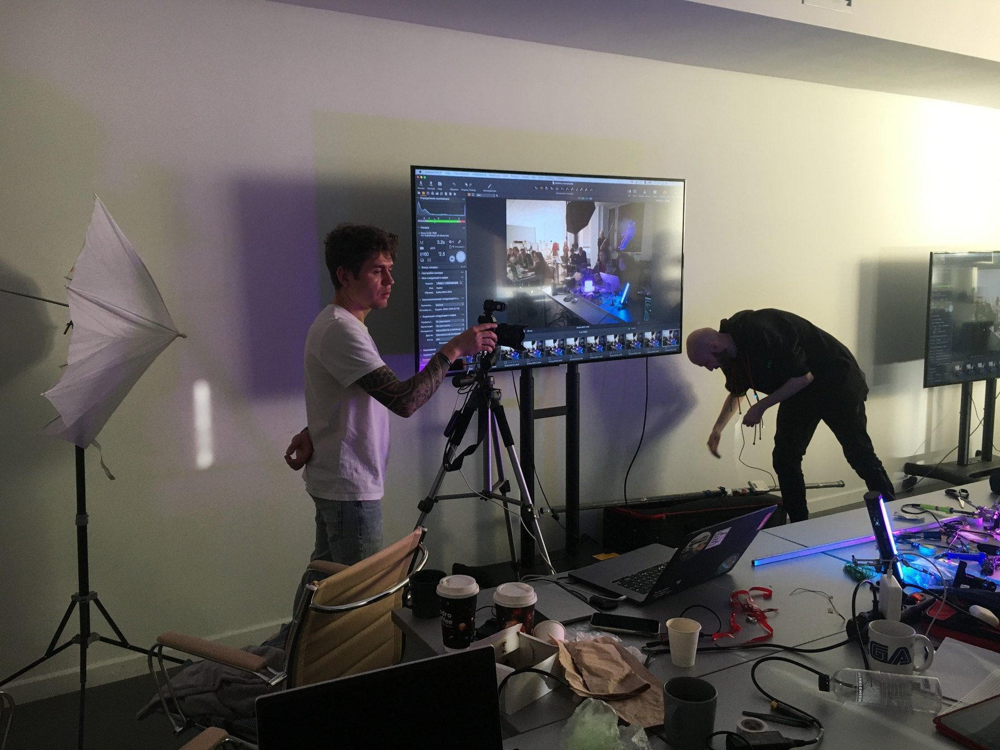
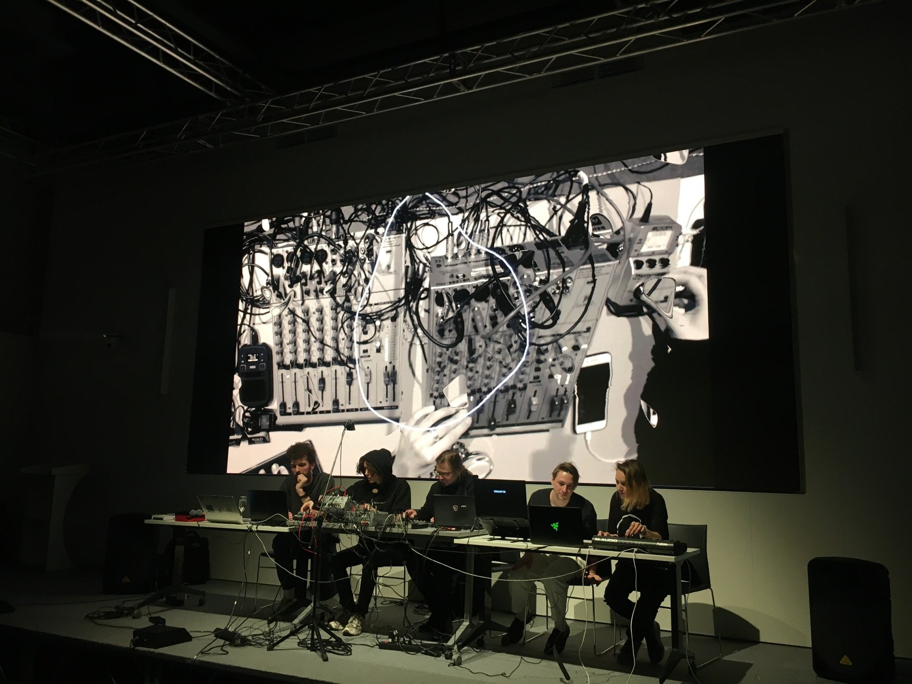
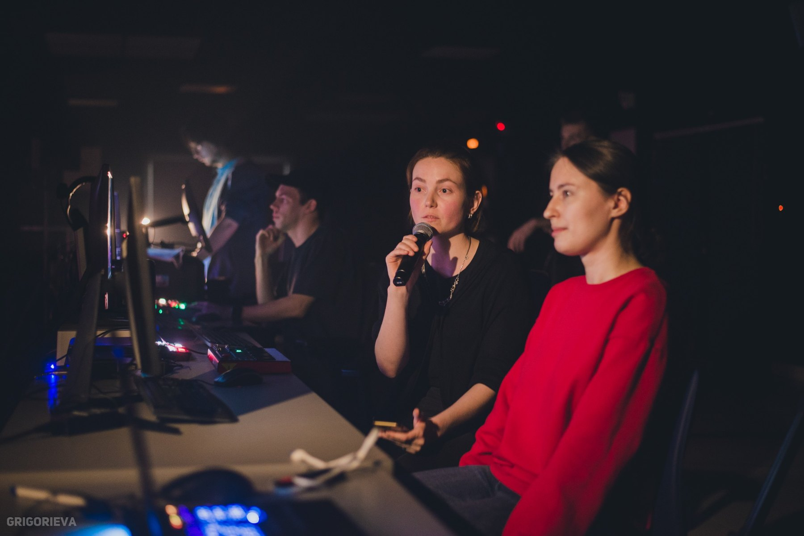
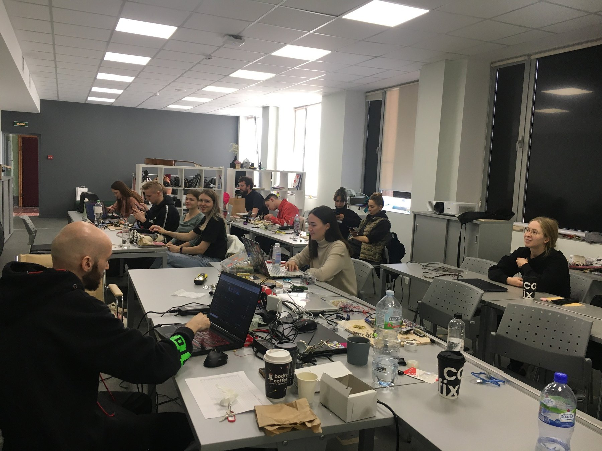
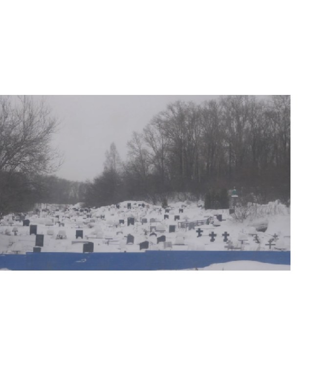
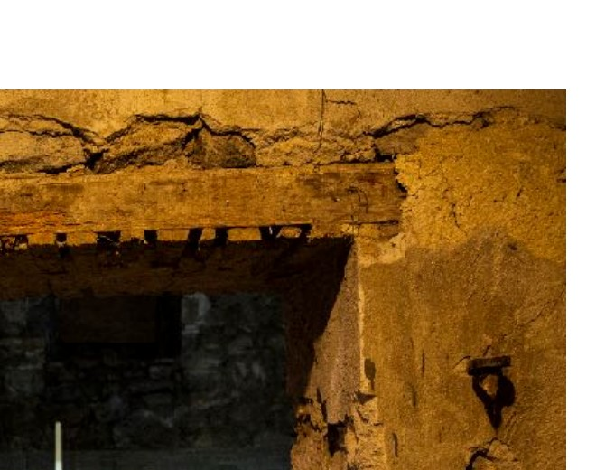

01
Educational programmes
Programme concepts, curricula, learning frameworks, faculty coordination, mentoring and public outcomes.
I develop cultural and educational projects from early concept to public presentation — connecting people, institutions, research and production.
I build cultural and educational programmes, exhibitions and interdisciplinary collaborations at the intersection of contemporary art, technology and research.
My work spans the full project lifecycle: developing concepts and educational frameworks, coordinating teams, mentoring participants, producing exhibitions and bringing projects to public presentation.
My background as an artist and researcher informs the way I approach interdisciplinary projects, particularly those connecting contemporary art, artificial intelligence, digital culture and science.
Programme concepts, curricula, learning frameworks, faculty coordination, mentoring and public outcomes.
Curatorial concepts, artist communication, budgets, equipment, installation, PR coordination and public programmes.
Projects connecting contemporary art with AI, emerging technologies, research and higher education.
A professional trajectory shaped by building structures in which artists, students, educators and institutions can work together.
Laboratory Lead & Lecturer — Cross-Media in Art
Founding Programme Curator — MA in Technological Art
Curator & Lecturer — Student Initiatives Platform
Exhibitions and cultural projects across art, photography and emerging technologies
Not a list of responsibilities — a closer look at how I build programmes, learning environments and exhibitions.
How do you build an educational programme for a field that does not fit neatly into either an art school or a technology curriculum?
The Master's programme in Technological Art was created to bring together contemporary artistic practice, emerging technologies and interdisciplinary research.
I joined the project as a co-founder and programme curator, working on the programme from its initial academic concept through implementation and public presentation.
The starting point was not a list of courses, but a more fundamental question: what should a graduate of a Master's programme in Technological Art be able to think, make and understand?
From there, I worked on defining the educational objectives, programme structure and learning trajectory. I helped shape the curriculum, selected lecturers from different disciplines and worked with them to transform their expertise into courses, intensive workshops and assignments that could function as parts of one coherent programme.

Designing the programme was only the beginning. Once teaching started, a large part of my role was connecting the different parts of the educational process — students, lecturers, artistic practice, technical experimentation and university requirements.
I worked with lecturers on course objectives and assignments and mentored students as those assignments developed into independent artistic projects. This often meant moving between very different levels of a project: discussing its conceptual framework, helping a student clarify an idea, suggesting appropriate technologies or tools, and giving critical feedback during reviews and presentations.


Each semester culminated in a public exhibition. At this point, the educational process became an exhibition-production process.
I worked with students to bring projects to completion, participated in developing the exhibition concept and coordinated communication between students, faculty, university administration and exhibition venues. My responsibilities included equipment planning, production logistics, transportation and installation, as well as supervising the exhibition setup on site.

Someone has to build the connections — between an artistic idea and a technical method, between a lecturer's expertise and a student's project, and between an educational process and its public outcome.
Programme development · Curriculum design · Faculty coordination · Student mentoring · Exhibition production · Project management

A laboratory where technology is not the subject itself, but a tool for developing artistic ideas.
I developed an interdisciplinary programme connecting contemporary art, emerging technologies and digital media, designed semester assignments, and delivered lectures and workshops.
I mentored individual and collaborative projects from research and concept through technical implementation, reviews, exhibitions and public presentation.

Curating as both intellectual work and production: building the exhibition narrative, then making the conditions for it to exist.
I develop exhibition concepts and texts, work with artists to bring projects to completion, request and review project materials, and shape exhibition and display decisions.
I manage budgets and estimates, source equipment, coordinate with galleries, foundations and PR teams, supervise installation from start to finish, and develop talks, concerts and parallel events around the exhibition.


I am most useful in projects where ideas need to become systems: a curriculum, an exhibition, a collaboration, a public programme or a new institutional format.